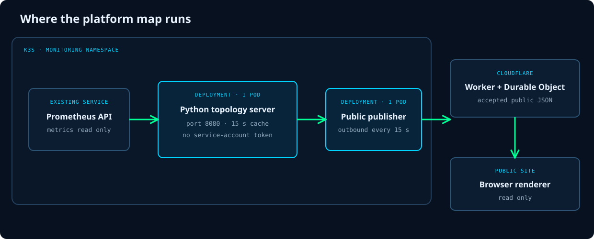

Runtime
Two pods in the existing K3s cluster
The map server is a single Python container in the monitoring namespace. It listens on port 8080 behind a ClusterIP Service and the private Traefik Ingress. It caches each graph for 15 seconds.
The pod runs as an unprivileged user with a read-only root filesystem, dropped Linux capabilities, and no Kubernetes service-account token. It does not call the Kubernetes API. Its only live data path is the Prometheus HTTP API already used by Grafana.
A separate publisher pod uses the same image. Every 15 seconds it reads the map server's public endpoint through the ClusterIP Service, validates it, and sends the accepted JSON outward.
